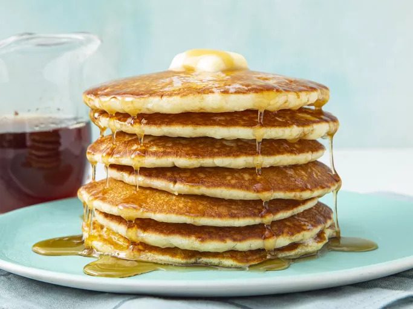

Home
Buttermilk Pancakes

Description
Pancakes are soft, fluffy, and golden-brown griddle cakes made from a simple batter of flour, eggs, milk, baking powder, and a touch of sugar.
As convenient as a store-bought mix can be, every home cook needs a good buttermilk pancake recipe in their repertoire. Don't have a tried-and-true favorite yet? You're in luck!
Ingredients
- 3 cups all-purpose flour
- 3 tablespoons white sugar
- 3 teaspoons baking powder
- 1 1/2 teaspoons baking soda
- 3/4 teaspoon salt
- 3 cups buttermilk
- 1/2 cup milk
- 3 large eggs
- 1/3 cup butter, melted
Steps
- Combine flour, sugar, baking powder, baking soda, and salt in a large bowl
- Beat buttermilk, milk, eggs, and melted butter together in a separate bowl
- Heat a lightly oiled griddle or frying pan over medium-high heat
- Pour the wet mixture into the dry mixture; use a wooden spoon or fork to mix until it's just blended together
- Pour or scoop batter onto the preheated griddle, using approximately 1/2 cup for each pancake
- Cook until bubbles appear on the surface, 1 to 2 minutes
- Flip with a spatula and cook until browned on the other side
- Repeat steps 5-7 with remaining batter
- Serve hot and enjoy!